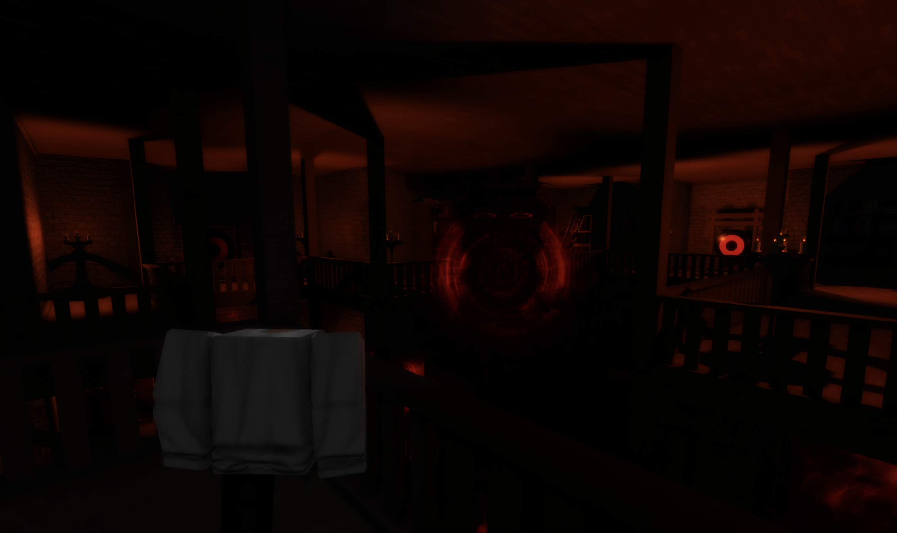
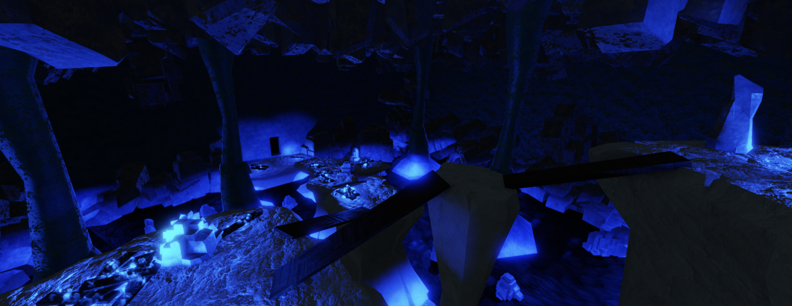
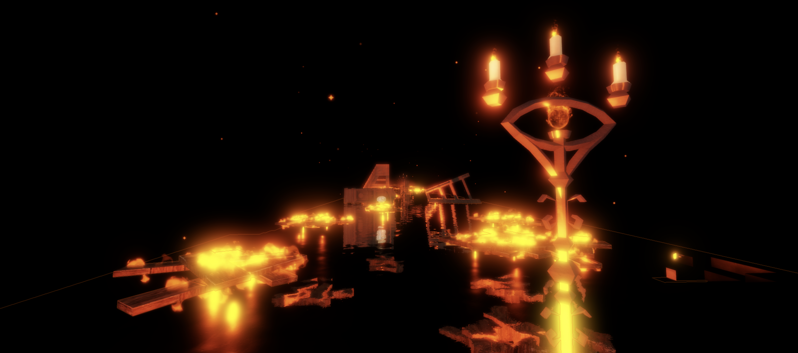
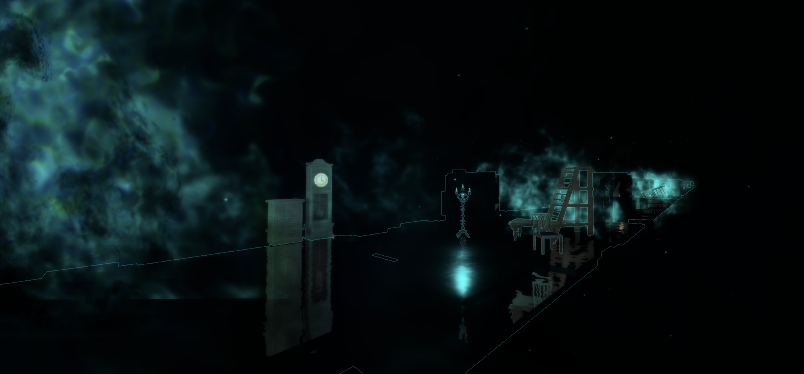
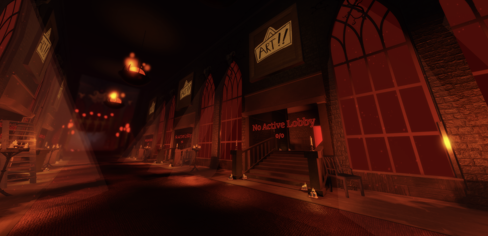
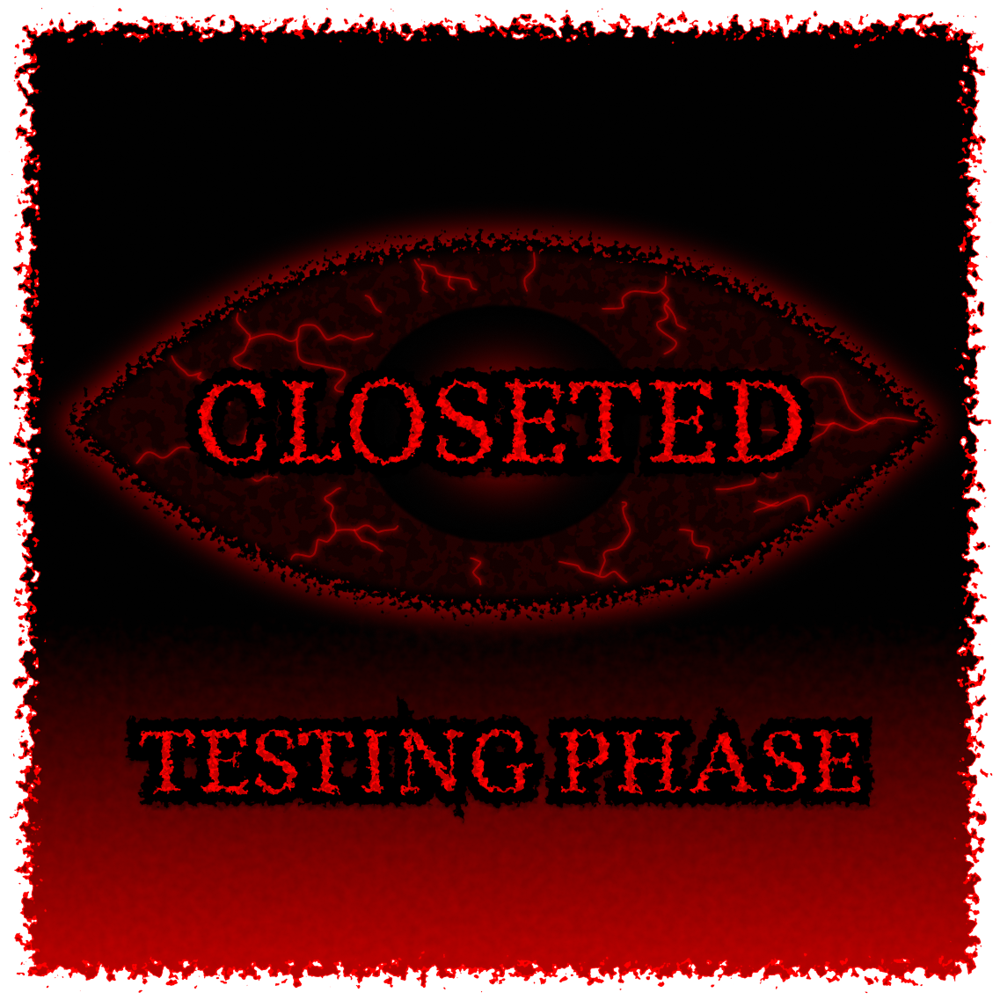
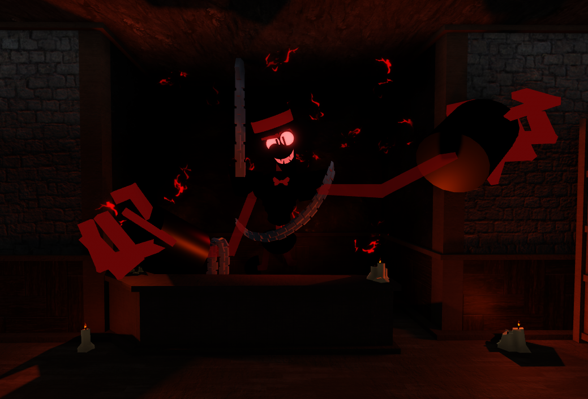
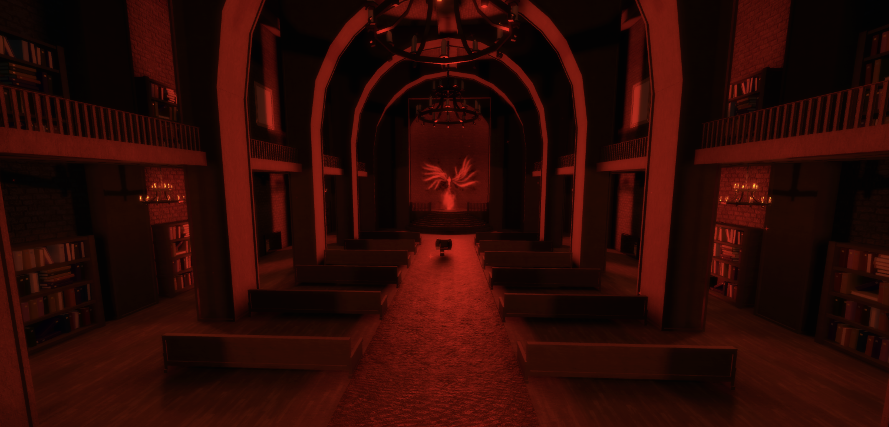

⚡ About Closeted
Closeted is a psychological horror experience where survival depends on awareness, timing and the choices you make under pressure. Players explore a series of dark, infinite rooms while being hunted by unknown entities. Every room holds its own dangers. Players are forced to adapt to their environment and continue the road of self-knowledge.
Closets offer temporary safety, but hiding for too long comes at a cost. Players need to manage their sanity, safety and progress all at once. The game has both jumpscares and psychological tension creating an atmosphere where uncertainty and paranoia are constant. The game is highly inspired by queer experience, the roblox games doors, grace and pressure
🙌 Latest Reveals & Updates
📚 Library Bossbattle
A second bossbattle was added, the entity is in the middle of the library, floating above black fog.
To lift the fog and enter the lower floor the entity needs to be defeated by continuesly using the gongs without dying by its attacks..

❄️ Ice Biome
The game now consists of the burning, dark, speed, normal and ice biome.
The first biome to bring a huge twist to normal room generation and be entirely different.

🌈 More versions
The speed biome, now has 3 new versions. The biome has more variation and different parkours.
A blue, green, orange and purple version are now in the game.

🚪 New Room Type
The speed biome, a place where you have to outrun a fog while obstacles are on your path.
The entire generation function was rewritten to approve any future new biomes and allow for smoother gameplay.

🗺️ Revamped Lobby
Nitra_Dev, the same person who made the shop entity was introduced to the dev team as a permanent dev instead of contributor.
Nitra made an entirely new lobby which was huge and greatly appreciated by the testers.

🎮 Tester Release
The base of the game has been fully developed and is ready to be tested. It took less than half a year to get to this point.
A total of 29 testers were invoked to find bugs and glitches in the following updates. Surprisingly not a lot of bugs were found, this, because i used OOP and better script style.

🛒 The Shop
A custom made entity from blender was imported, rigged and animated.
The shop system and economy system are revealed to the public.

⛪️ The first reveal | Cathedral of Judgement
After almost 3 months of development the community saw the first reveal of Closeted, the main idea of the game was still not revealed.
Now we know this screenshot is in the middle of the battle agains "Conflict" an angel punishing you for your identity.

👤 Secret Development
The game started as a secret background project as i figured developing it would take very long. However, i had the base of the game planned out in less than a month!
Members of Soufyan Studios got subtle hints of the start of the game its development.
🎯 Key Features
🌍 Infinite Generation: The rooms never stop generating and only get more and more dangerous.
🥊 Unique (Hostile) Entities: Every entity has its unique behavior and look.
🎶 Atmospheric Sound and Voiceline Design: Custom made music, SFX and voicelines.
👤 Solo & Multiplayer: The game is able to be played with 1-4 players.